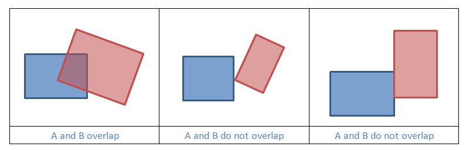
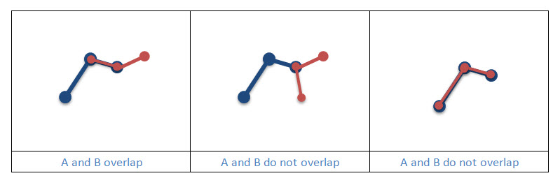

Two geometries overlap if they have the same dimension, and their intersection also has the same dimension but is different from both of them.
|  |
|  |
Example 1: Does Geometry A overlap Geometry B?
static boolean geometryOverlaps(Geometry geometryA, Geometry geometryB, SpatialReference sr)
{
boolean overlaps = OperatorOverlaps.local().execute(geometryA, geometryB, sr, null);
return overlaps;
}